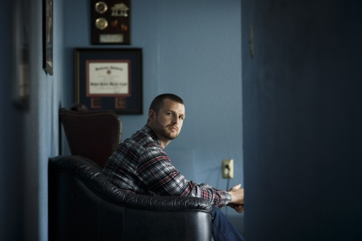
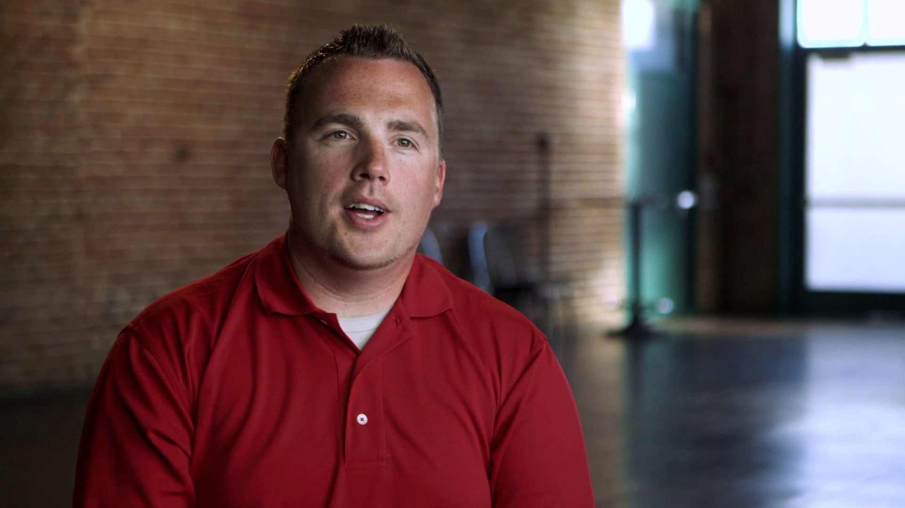
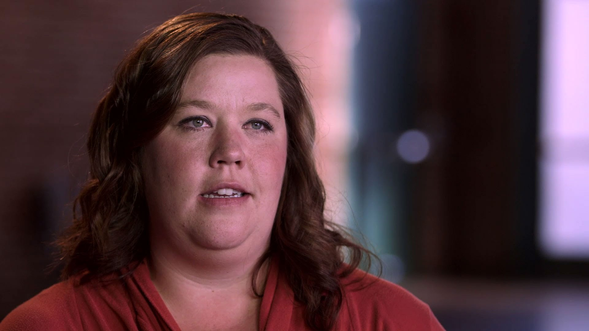

After 9/11, Michael Liguori joined the Marines to fight for his country. When he returned, he struggled with Post-Traumatic-Stress-Disorder and attempted suicide. This is his story
"I wanted to share this with you because life is complicated, hard and often, a constant struggle. But that doesn't mean you have to do it alone."
Read Michael's Story
Max returned from the Marines and sought treatment to combat his internal conflicts. Returning to school and utilizing the support around him was crucial to his recovery.
"You can understand those negative cycles and get out of them and understand that what you went through... you can change that if you're aware of what's happening."
Read Max's Story
After her military career, Ashley embarked on a journey to empowerment and validation. She stresses taking the necessary steps to start the path to healing.
"Get the help that's there. The more you talk about it, the easier it is. And the more you talk about it out loud, the more organized the situation becomes in your head."
Read Ashley's Story![Veterans Outreach Logo]()